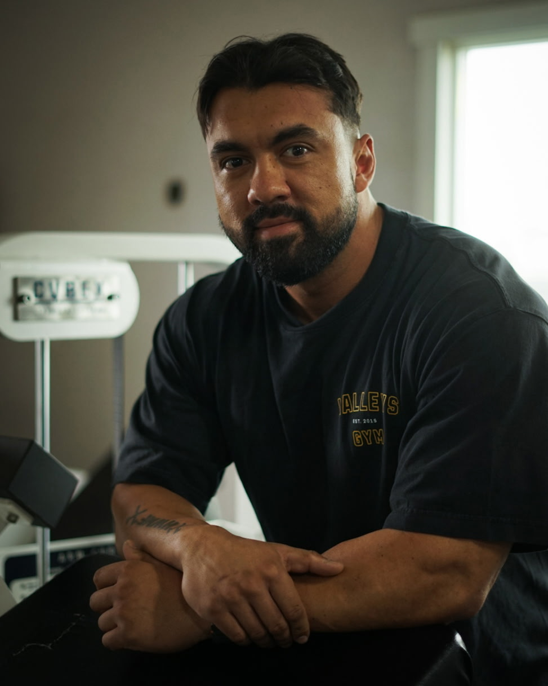

Helping You Lose Fat, Build Muscle, And Eliminate Excuses.

Bodybuilding and fitness have been major passions of mine since I was a teenager. As a full-time Detective, a husband, and a father of two, I know exactly how demanding and chaotic life can get. I also know what it takes to balance those heavy responsibilities while still prioritizing your health.
As a certified NASM Nutrition Coach, I built TYFITNESS to provide science-based, straightforward programming that actually fits into a busy lifestyle. There are no fads here, just proven methods, hard work, and accountability.
Nothing brings me more pride than seeing the incredible progress my clients make when they commit to the process. If you are ready to put in the work and change your lifestyle, I am ready to guide you every step of the way.